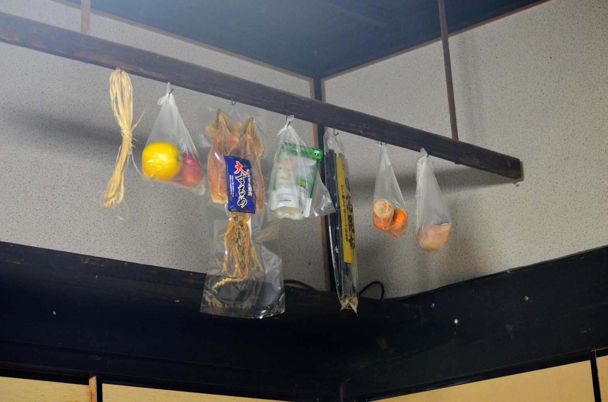

戻る
田舎の写真

2033年には日本の空き家率は30％を超え、地方都市には廃墟と化した家屋が 立ち並ぶと予想されている。寂れてはいるが、どこか温かい田舎の景観はとても心地が良く、 廃墟と化してしまうのはもの悲しい気分がする。
近年、インターネットを通じてモノや場所、スキルや時間などを共有する「シェアリング・ エコノミー」とやらが潮流であり、田舎の景観が今後、廃墟と化すのかどうかはわかりませんが、 写真のような温かい場所は、ずっと残っていてほしいですね。